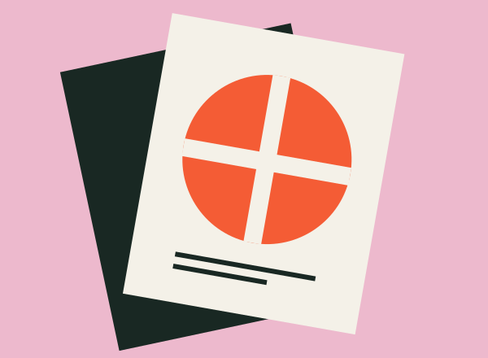
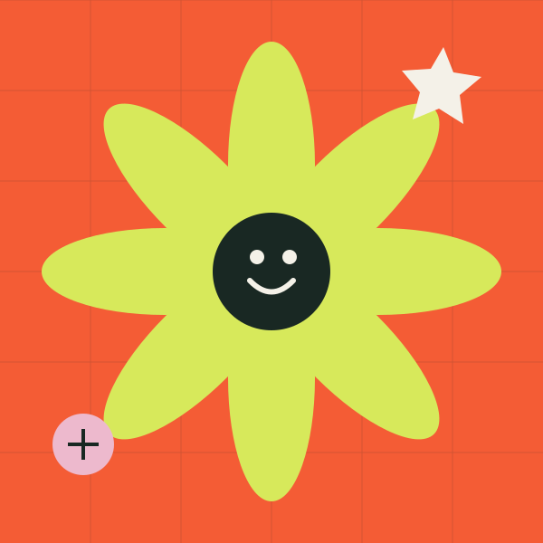
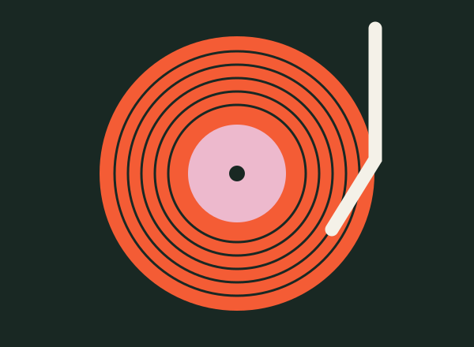
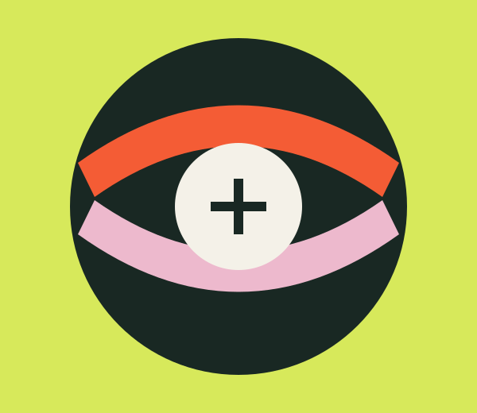

Workshop / Nadia Tan
Make your mark.
Ink, paper and a little happy accident. Create a two-colour print to take home.
A little art. A little music. A whole lot of possibility. Come make, meet and find your people.
Explore the programme
Find your kind of thing

Workshop / Nadia Tan
Ink, paper and a little happy accident. Create a two-colour print to take home.
Talk / Amir Rahman
An honest conversation about finding your voice and making work that matters.

Live music / The Sunday Club
Ease into the afternoon with warm rhythms, local sounds and good company.

Different paths. Shared possibilities.
Common Ground brings curious minds and independent makers into the same space. No perfect portfolios. No secret handshakes. Just room to try something new.
Spend an hour or stay all day. You don’t need to call yourself creative to belong here.
Make yourself at homeA little taste of the day
Make. Meet. Repeat.
A short festival motion poster.
Original motion artwork. Silent video; all information is shown on screen. Read transcript.
Bring a friend. Leave with an idea.